Home page options
Twelve directions for the portfolio home page. Each one fits a laptop screen without scrolling. Open one to try the hover and click states.
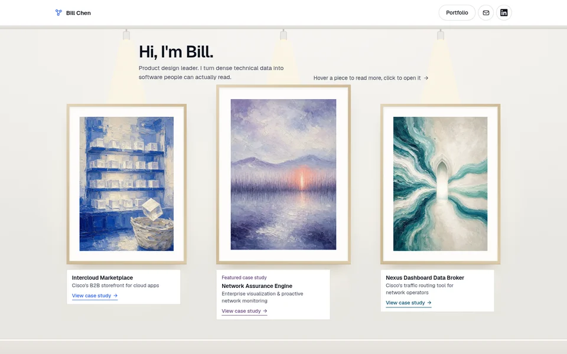
Option 1A: Gallery with paintingsA white gallery wall. Track lights switch on one by one over three paintings, one for each case study. Hover a painting and its light brightens while the placard opens.Open option 1A→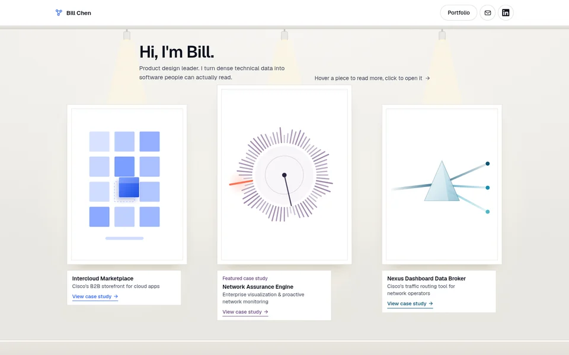
Option 1B: Gallery with abstract piecesThe same gallery, with three abstract pieces drawn in code. Each one moves on hover: an app drops into a cart, the timeline stops on the broken moment, the beams thicken.Open option 1B→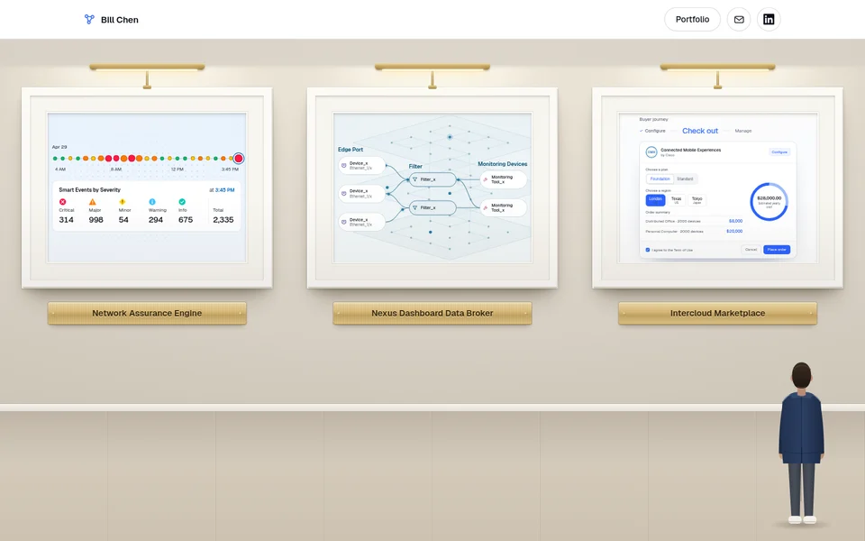
Option 1B v2: Gallery with live case graphicsThree equal frames under brass picture lights, each holding the real hero graphic from its case study. Hover or focus a frame to play it and reveal the line on its plate. Bill stands at the bottom right with a short note about himself.Open option 1B v2→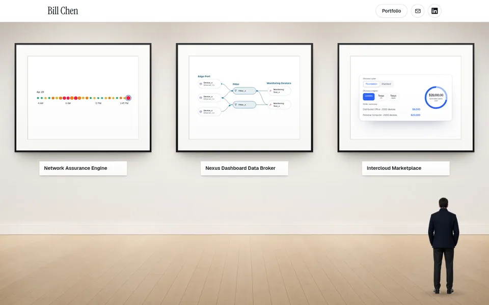
Option 1C: Photographic galleryA calm white gallery photographed in soft daylight. Three equal frames with thin black mouldings and white mats hold simplified versions of each hero graphic, which play on hover. A white wall label below each frame reveals its line, and a visitor at the bottom right shares a short note.Open option 1C→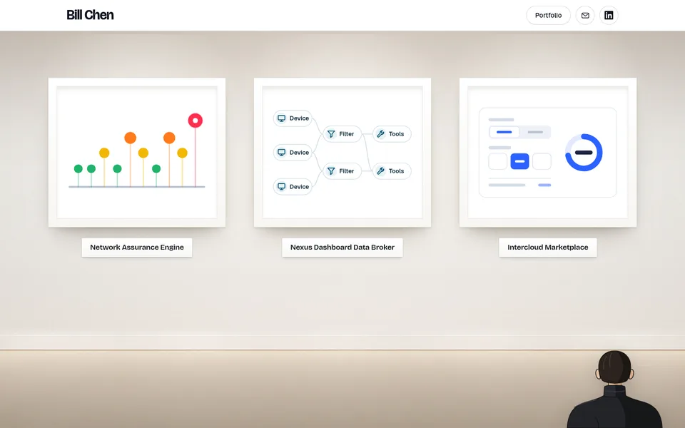
Option 1D: Gallery with white framesThick white frames in a bright gallery with a quiet floor. Each frame holds an abstract sketch of the project that plays on hover while the other two soften. A caption appears on the wall below the label, and a viewer at the bottom right says hello.Open option 1D→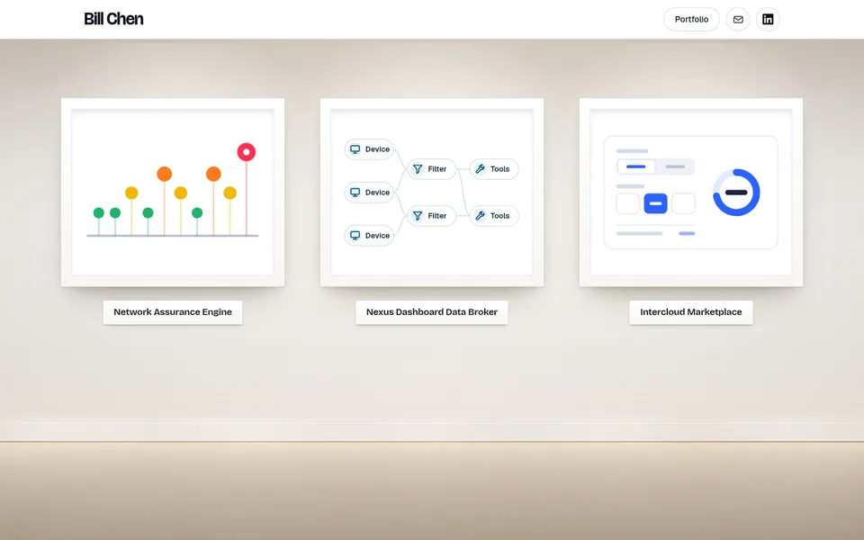
Option 1D without figure: Gallery, frames onlyThe same white frame gallery as 1D with nobody in the room, so the three projects carry the whole page.Open option 1D without figure→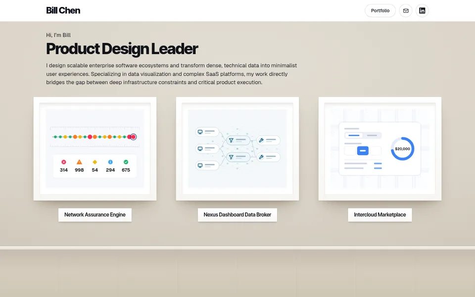
Option 1E: Gallery wall with simplified heroesThe 1B gallery wall and floor without the lights. Three white frames hold simplified versions of the original case graphics, and a short subtitle appears under the plate on hover. Try ?intro=2 or ?intro=3 for other intro placements and ?logo=2 or ?logo=3 for other name fonts.Open option 1E→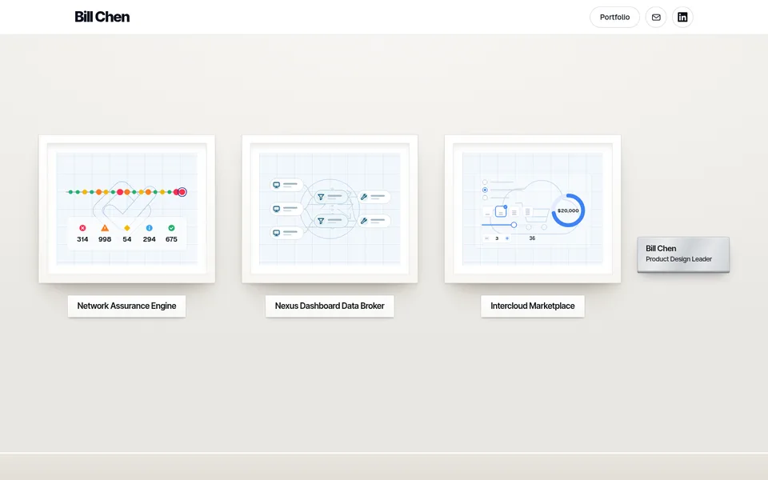
Option 1F: Blueprint gallery with an artist plaqueThe 1E gallery wall with each graphic on faint blueprint paper and its logo traced in the middle. A brushed silver plaque after the last frame opens into a short intro on hover. Try ?grid=case for each case colour and ?logo=2 or ?logo=3 for other name fonts.Open option 1F→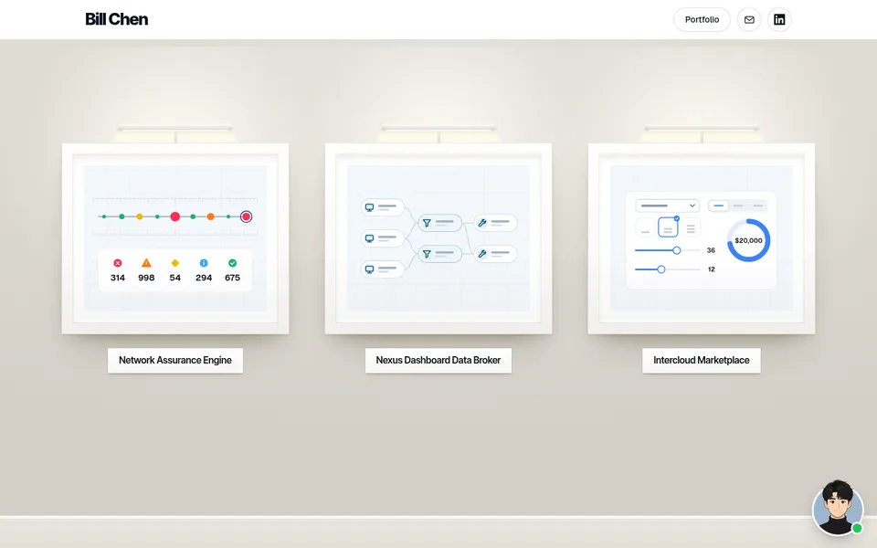
Option 1G: Blueprint gallery with an avatar chatThe 1E gallery wall on fainter blueprint paper, with the Assurance ruler ticks back. A floating avatar sits at the bottom right like a website chat launcher, and hovering or tapping it opens a short intro bubble. Try ?grid=case for each case colour.Open option 1G→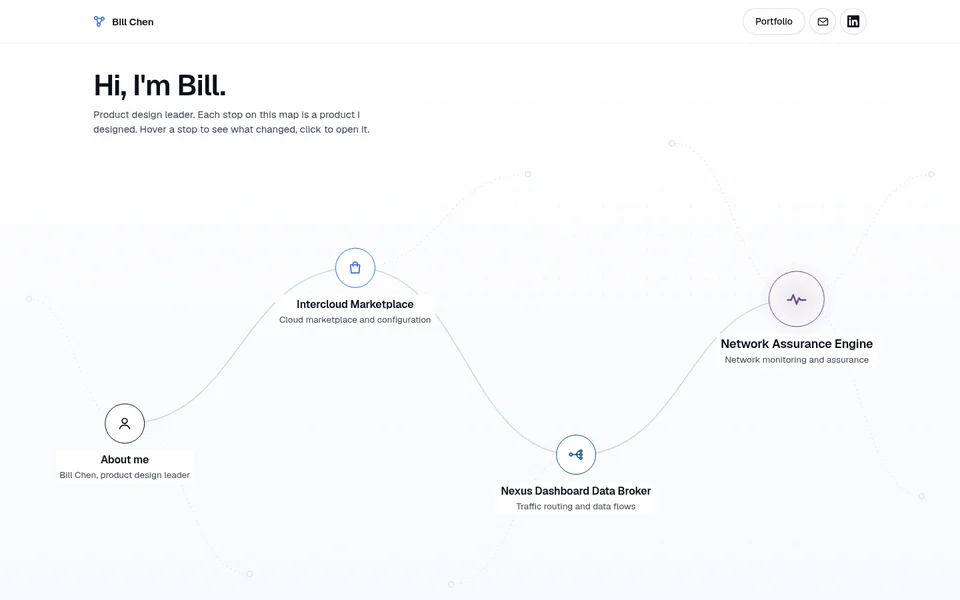
Option 2: Flow mapEach case study is a stop on one route that starts with me. On load a packet walks the route and lights each stop. Hover a stop for details.Open option 2→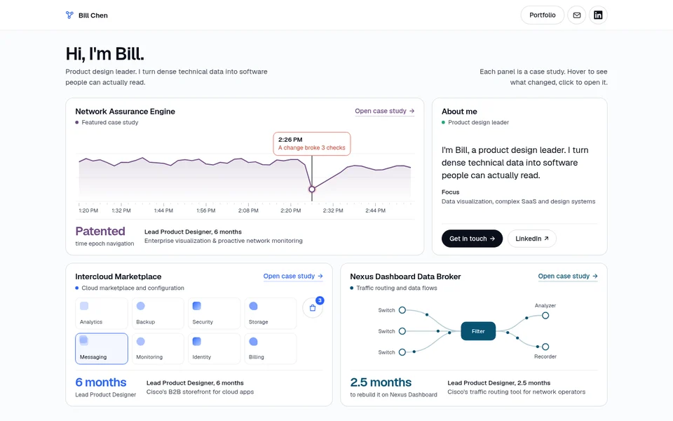
Option 3: DashboardEach panel is a case study with its own small live view. The Assurance timeline scrubs to the moment a change broke the network.Open option 3→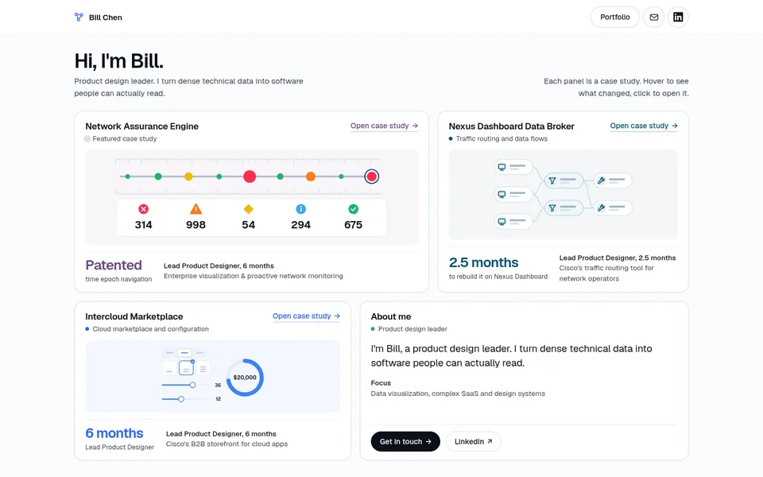
Option 3B: Dashboard with blueprint artThe option 3 dashboard with the 1G artworks in each case panel, on faint blueprint paper. Each piece is still at rest and plays its 1G sequence on hover or focus.Open option 3B→